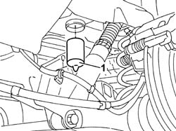

4420W14 REAR SUSPENSION END BUFFER - REPLACE
- Path
- Procedures > 44 SUSPENSION AND WHEELS > 4420 REAR SUSPENSION > 4420W REAR SUSPENSION PROTECTIONS > 4420W14 REAR SUSPENSION END BUFFER - REPLACE
- Kind
- repair procedure (removal / refitting; the operation number is the code)
- Applies to
- all engines; all production periods
- Interactive page
- https://sloeber94.github.io/elrnDB-fUlss/en/#/179007395
Applies to: all engines; all production periods
 Removing
Removing
 Refitting
Refitting- Position the vehicle on a lift.
1. Release the end of travel buffer from the housing and remove it.

Applies to: all engines; all production periods
Refitting
Removing- Place the end of travel buffer in position and check that it is secured.
- Remove the vehicle from the lift.